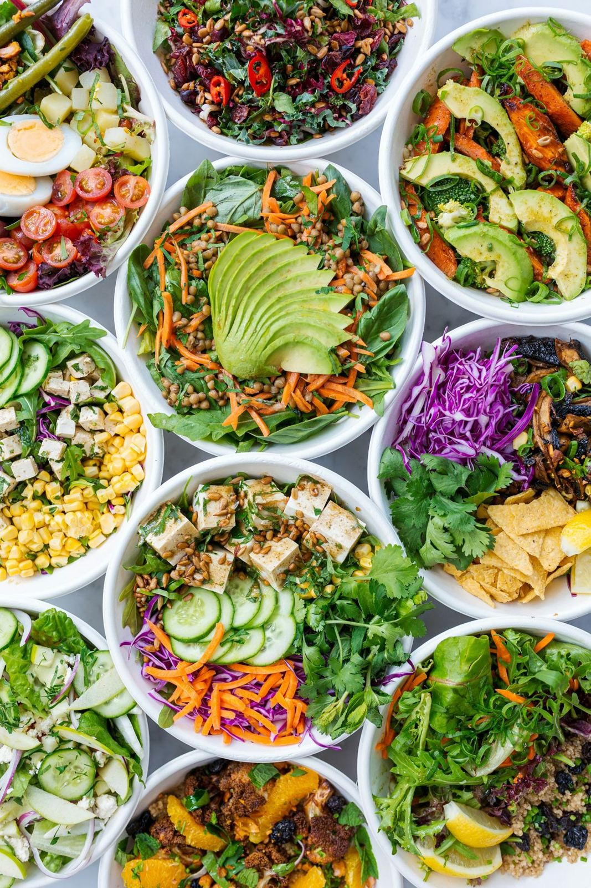
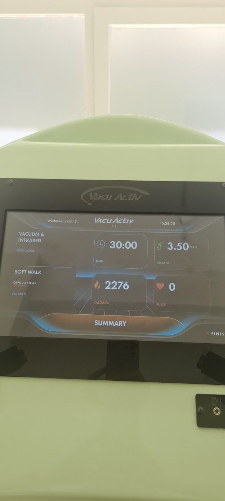

Beslenme ve hareketi bir arada düşünen bir klinik
Kişiye özel beslenme planı, vücut analizi ve düzenli takiple Hasan Celal Güzel Caddesi'ndeyiz.



Beslenme programları
Hedefinize ve günlük düzeninize göre hazırlanan planlar.
Kilo verme programı
Yaşam tarzı, alışkanlıklar ve tahlil sonuçları dikkate alınarak sürdürülebilir bir beslenme planı hazırlanır.
Vücut analizi
Yağ, kas ve su oranı ölçümleriyle süreç sadece tartıyla değil vücut kompozisyonuyla izlenir.
Destekleyici cihaz uygulamaları
Vakum, rulo ve titreşim temelli cihaz uygulamaları beslenme programına destek olarak planlanabilir.
Hastalıklarda beslenme
Diyabet, insülin direnci, tiroit ve kolesterol gibi durumlarda tedaviyi destekleyen beslenme planlanır.
Sindirim sağlığı
Şişkinlik, reflü ve hassas bağırsak gibi şikayetlerde tetikleyici besinler birlikte belirlenir.
Online danışmanlık
Görüntülü görüşme ve düzenli mesaj takibiyle şehir dışından da danışmanlık alınabilir.
Vücut kitle indeksinizi hesaplayın
Boy ve kilonuzu girin, VKİ değerinizi ve günlük yaklaşık su ihtiyacınızı görün.
Süreç nasıl işler?
Yasaklar listesi değil, adım adım kurulan bir düzen.
Tanışma görüşmesi
Beslenme alışkanlıklarınız, günlük düzeniniz ve hedefiniz konuşulur.
Ölçüm ve tahliller
Vücut analizi yapılır, varsa güncel tahlil sonuçlarınız değerlendirilir.
Kişiye özel plan
Sevdiğiniz besinleri ve yaşam düzeninizi hesaba katan bir plan hazırlanır.
Düzenli takip
Haftalık ya da iki haftalık kontrollerle plan sizin ilerlemenize göre güncellenir.
Size uygun bir saat bulalım
Formu doldurun ya da arayın, randevunuzu birlikte planlayalım.